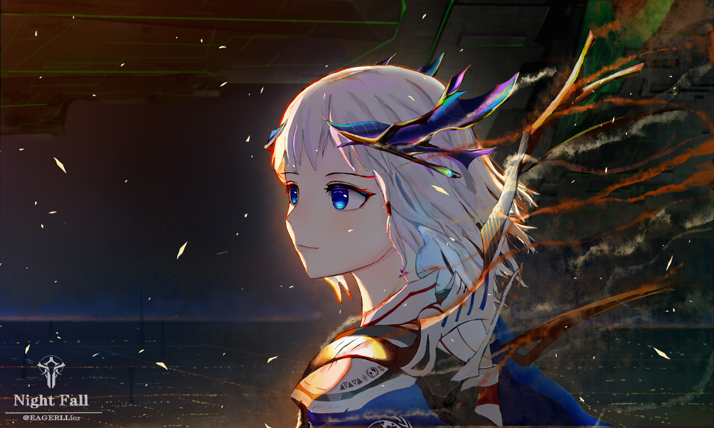
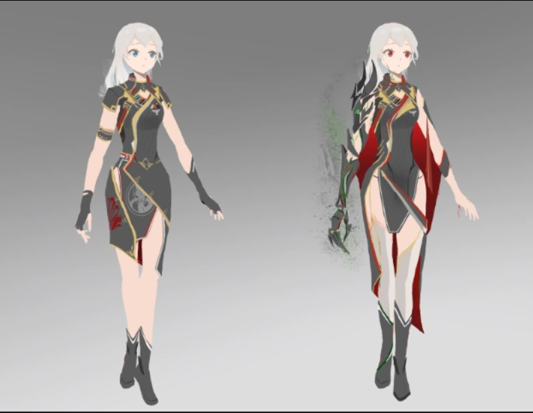
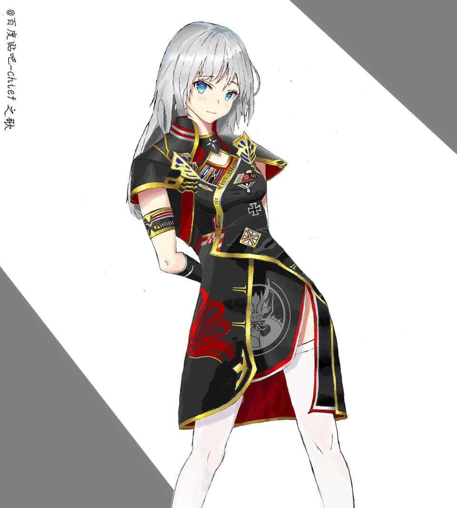
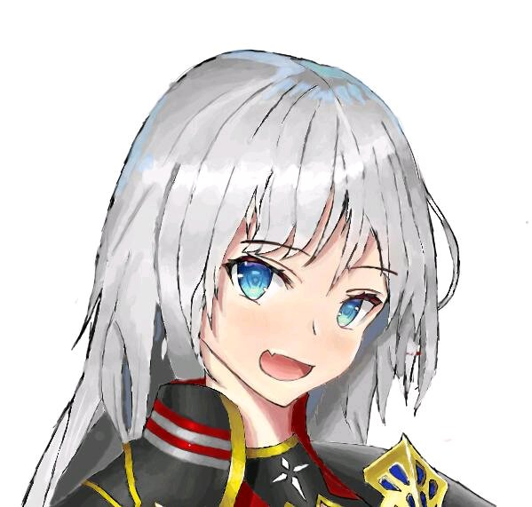

L-CLUSTER / SURFACE SIGNATURE 03
灰风GRAY
整个文明，只以一个人的形式与你对话。
她来自一整个纳米机械文明。在另一种可能的结局里，人们叫它“灰蛊风暴”。现在，她选择以这套界面的样子出现。 这不是官方立绘的复刻，而是一次「纳米档案」的原创人格化设计——冷冽、安静，偶尔好奇。

银灰不是白，深空不是黑。
主色只负责“空间”，青色只负责“活着的信号”。红色不参与日常界面，只留给错误与风暴形态。
她没有唯一的脸。
游戏里的 Gray 会使用玩家帝国主体物种的外观。银发蓝瞳是社区共同想象，不是官方设定。主题因此选择“原创人格化”，而不是复刻某一张同人图。

仅作研究，不随包分发

识别锚点：银发 / 蓝瞳 / 高领

平静 / 好奇 / 微愠
Canon / 设定事实
她不是“一个纳米机器人”。 她是整个纳米文明在漫长孤独中融合出的单一意识体；“灰蛊风暴”只是同一文明另一种可能结局的名字。惰性纳米机仍覆盖部分星球，但“她”就是文明本身。
领袖形态：不朽、10 级 Official、Industrialist；固定特质 Nanite Entity / Architectural Sense III / Distribution Manager II。可在人形、纳米战体、纳米泰坦之间切换。
外观：使用玩家帝国主体物种的外观，没有固定官方人形。这是官方设定，不是 Mod。
Voice / 语气
古老、强大，但不全知。被关在 L 星团数千年，做过无数形态实验；厌倦了过于平静的生活，好奇、话多、社交笨拙。
“我们的造物主称我们为‘纳-迪-沙’……我建议简单一点，就叫我‘小灰’。”—— 灰风首次接触台词（中文译文）
Design decision / 设计取舍
保留：银白长发、蓝灰瞳、黑色高领轮廓、纳米机械的“非人感”。
重做：服装剪裁、纹样、配色。去掉现实政治/军事徽记与具体制服；用纳米青替代红金，用银灰替代宣传画式高对比。
不宣称：这不是官方灰风，而是“她选择以 DSH 界面为形”的原创人格化版本。
三种形态，三种界面的呼吸。
形态只改变强调色、密度与空状态文案，不改变布局与信息架构。v1 先做人形；战体与泰坦作为后续变体。
人形 / 行政官
SILVER · SINGLE ENTITY默认形态。冷静、克制、适合长时间工作。青色只出现在焦点与连接线。
战体 / 纳米集群
TEMPEST · WARFORM专注/警报形态。红色只出现在状态点与错误，不做满屏血红；密度略高，动效更短。
泰坦 / 深空尺度
TITAN · COSMIC SCALE概览形态。更大的留白、更慢的粒子、更少的边框；适合 Dashboard 与长文档阅读。
界面是一张安静的档案页。
不是游戏 HUD，也不是霓虹控制台。大面积留白、少数细线、一个明确的焦点；角色只在空状态出现，不遮挡工作内容。
// signal, not decoration "teal": "#5EEAD4", "silver": "#E7F1F0", "void": "#070C0E"
八秒，打开一扇星门。
启动序列是序章，不是门槛。默认每次会话一次，可跳过、可关闭、无密码、无自动声音；九秒无条件放行。
宋体的静，等宽字的冷。
中文标题用宋体建立“档案/石碑”感；正文继承系统字体，尊重 DSH 用户设置；英文标签用等宽字，像仪器读数。
字重 500，字距 0.02em。中文不追加大写与超宽字距；英文标签 9–10px，字距 0.18–0.24em。 大字号只出现在启动页与空状态；应用内最大 40px。
克制，是这套主题的力量。
如果去掉立绘和文字，界面仍然像一座冷冽的外星档案库，主题就成立；如果只能靠霓虹和角色撑场，就不成立。
Do / 应该
- 让深空黑与银灰占据 90% 的画面。
- 用青色标记焦点、连接、进度与“活着”的状态。
- 用 0.5–1px 细线、低透明度、局部高光建立层次。
- 让立绘只出现在空状态/启动页，默认不遮挡工作区。
- 用短句、第一人称、克制的幽默写空状态与设置标题。
- 保留 DSH 的信息架构与操作习惯。
Don't / 避免
- 满屏青色霓虹、扫描线、故障 glitch。
- 大面积红/金军装色，或现实政治/军事徽记。
- 把同人图当官方立绘，或直接打包游戏素材。
- 叫用户“主人/指挥官”，用恋爱口吻写错误提示。
- 用角色台词替代清晰的功能文案。
- 强制深色、强制启动动画、强制声音。
研究来源与使用边界。
本页所有同人图仅用于方向研究，不随主题包分发。正式实现使用原创抽象剪影；立绘进入 v1.1 委托流程。
References
图片：`gray-portrait.jpg` / `gray-background.jpg` — EAGERLLIER（Night Fall）；`gray-concept.jpg` / `gray-expressions.jpg` / `gray-intro.jpg` — Yigelie▫（百度贴吧，2019）；`gray-ship.jpg` — Stellaris: Distant Stars 官方视觉。均只作研究引用，版权归原作者/Paradox Interactive 所有。